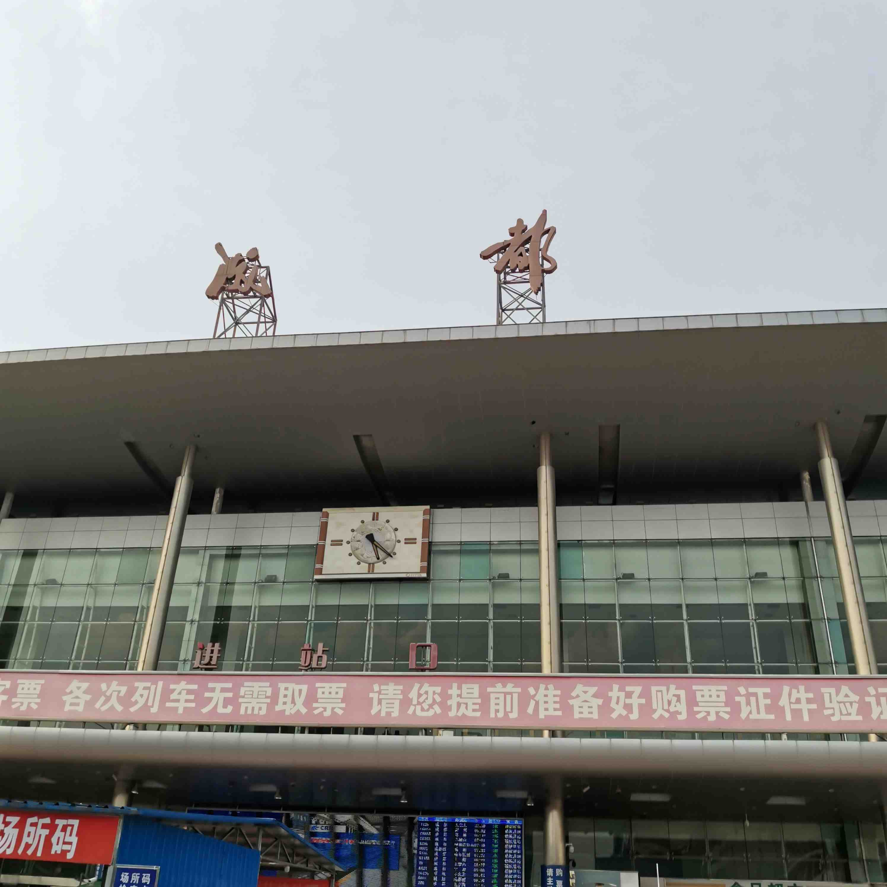
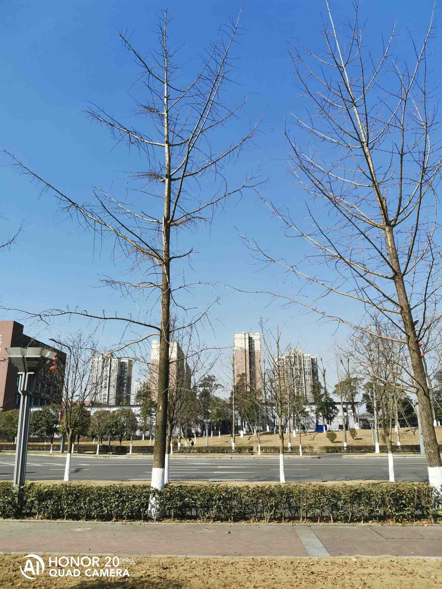
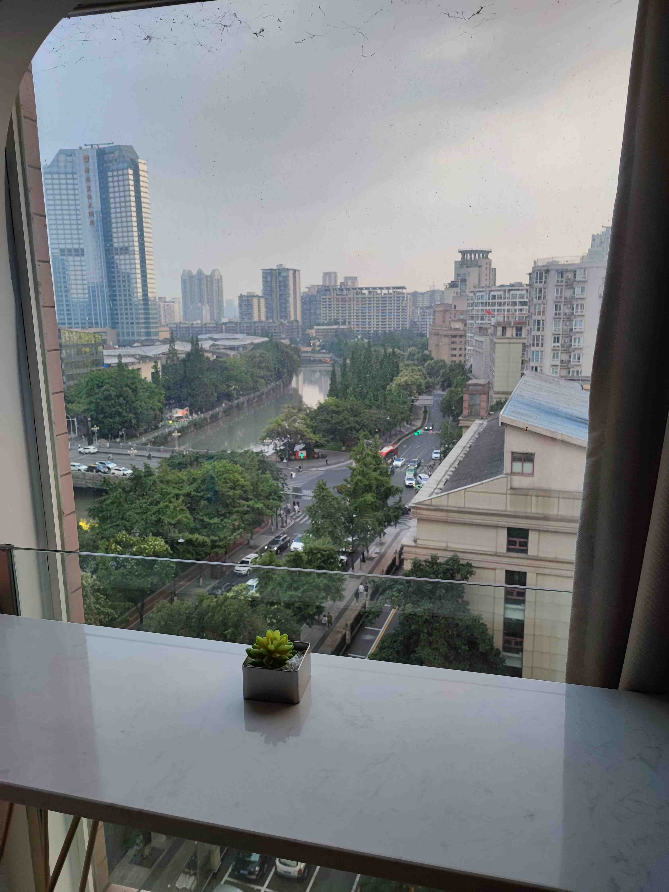
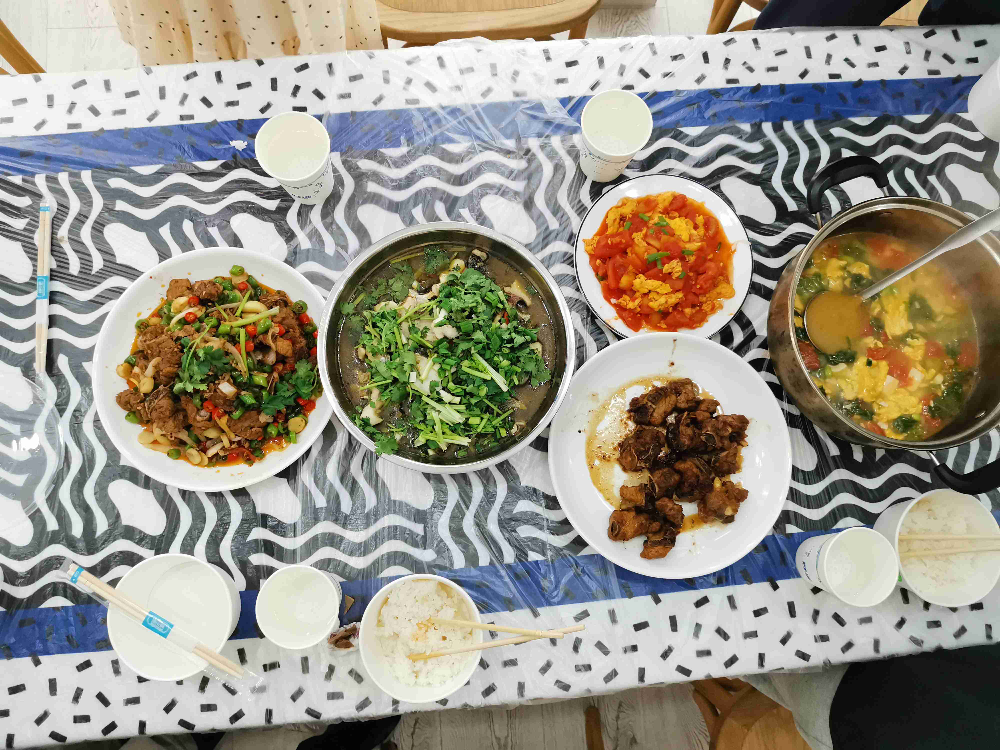
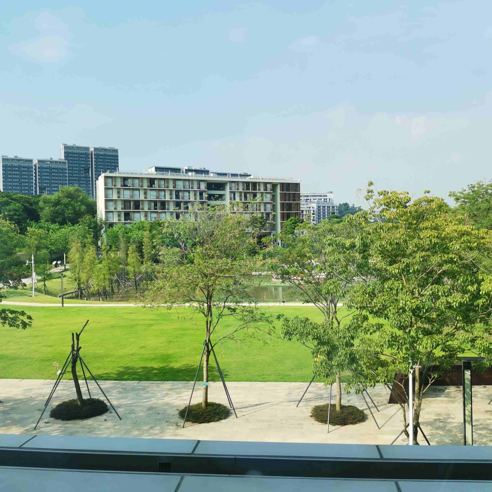
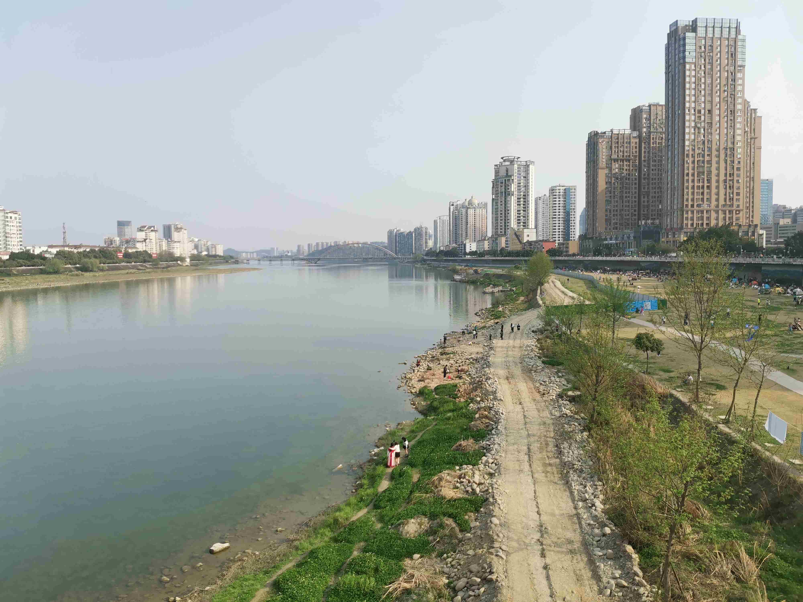
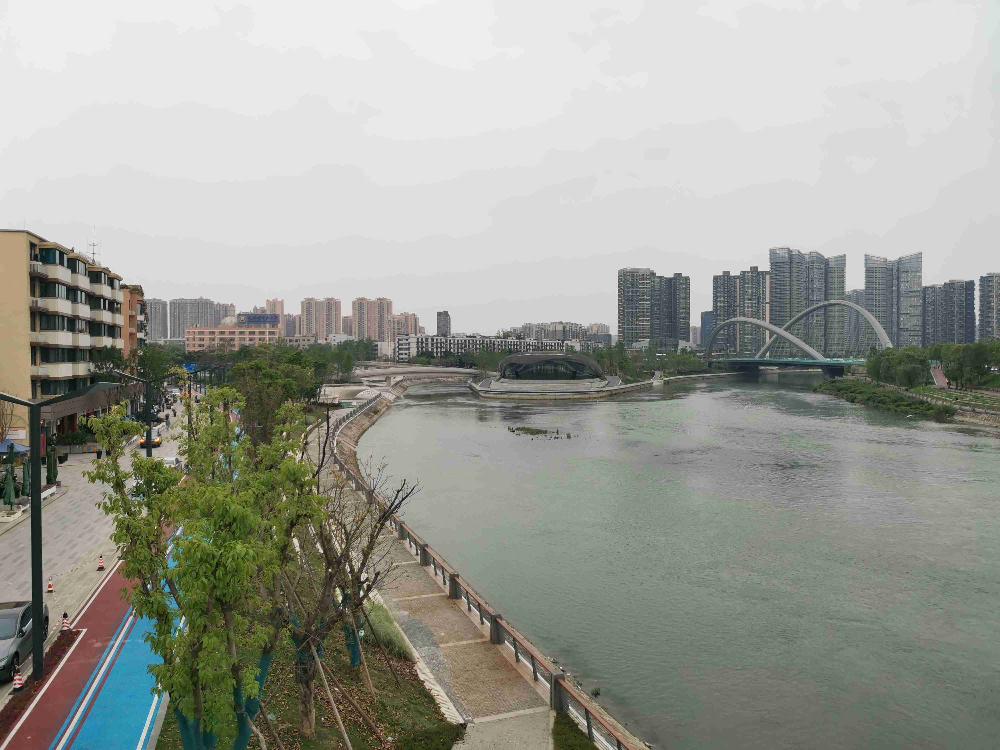
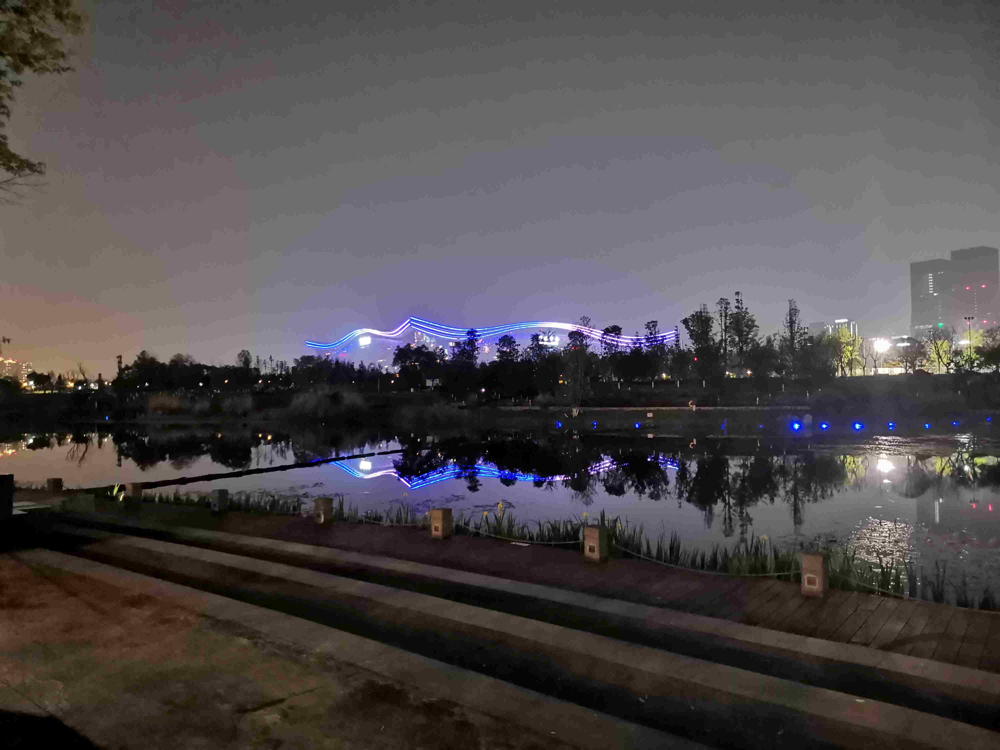
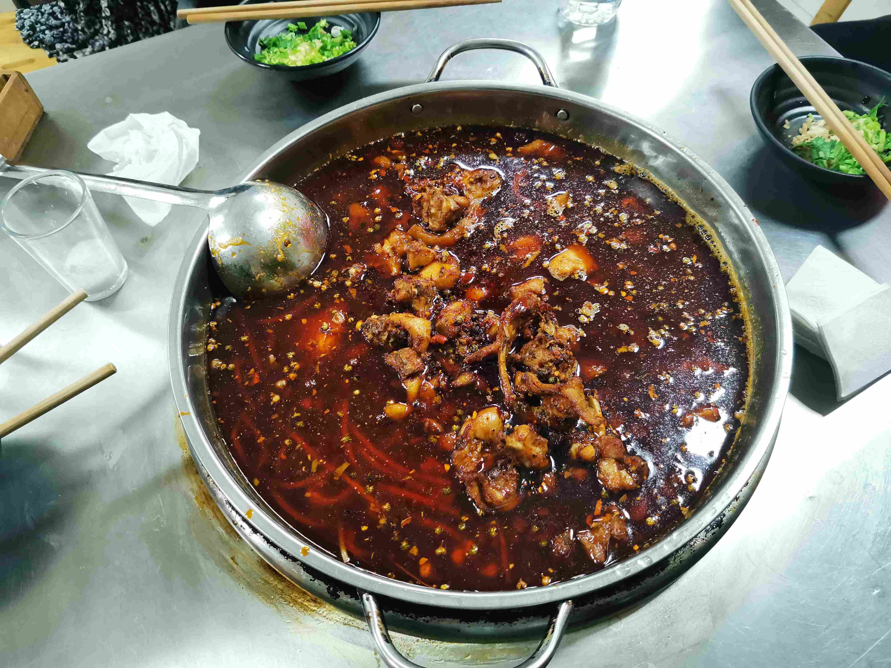
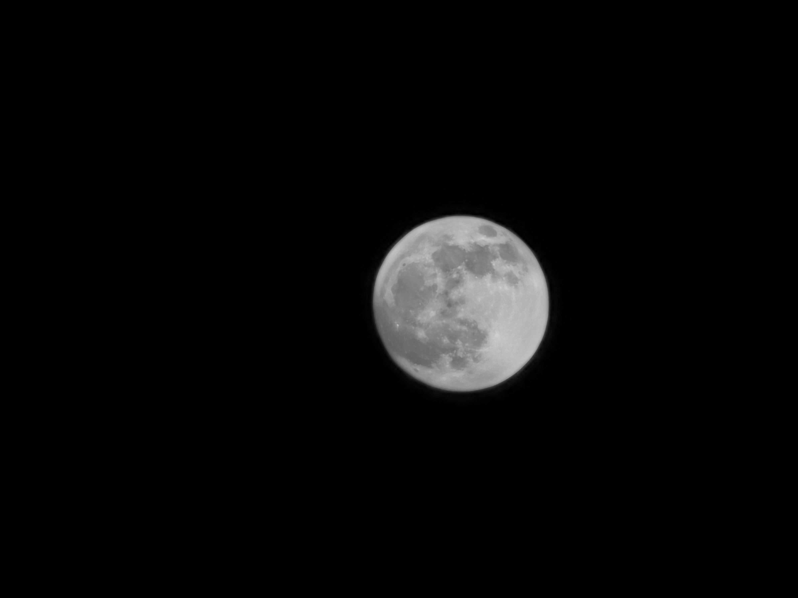

印象深刻的瞬间（二）
[未完待续]
- 在成都的新家，端午节父母从老家过来，购置了器具，在新家中举行了简单的搬家仪式——煮了一碗肉丝面。第二天是父亲的生日，我一天天长大，父母却一天天老了。
{kind=link}
{kind=link}
- 在成都龙泉驿，爷爷带我一起去逛早市，旁边摊上卖苞谷的阿姨对我说：“像你这样七点陪老年人逛菜市场的，还不多见嘞！”突然哽住不知如何回答。
成都站
{kind=link}
- 在考过科三的下午，差一分没过科四，花了20块钱打车从考场回学校，朋友在学校门口等我。难得的冬日暖阳，朋友一边安慰我，一边和我从门口走回寝室。
冬银杏
{kind=link}
- 在冬日下的山道，朋友第一次来我家乡。早晨我们背上干粮，从县城郊外的小径出发，黄昏时终于到了那个小水库，回程中我们在公路上行走，拍到了故乡最美的夕阳。
{kind=link}
{kind=link}
在暴雨前的小酒吧，喝酒后总是会聊一些伤感的话题，只是那天说着说着，突然下起了暴雨。露天的雨棚根本挡不住风雨的倾泻，我们缩在一块，等着雨停，就像等着毕业。
在成都的民宿，提交过论文终稿后，我们在太古里旁边租了一晚民宿。那天我们自己买了食材，做了一顿饭，一起在客厅看了场电影，吃了很多很多的冰激凌，一切都和我梦中想的一样。
民宿
{kind=link}
晚餐
{kind=link}
- 在学校的星期三下午，上完学术写作，四点左右，我会从三教后面沿东北方的小径回寝室。一边骑车，一边和母亲打电话，我们从东扯到西，母亲也会一遍又一遍地叮嘱我注意安全。我笑着回答嗯嗯，心中却早已乘着风，飘到阳光与云霄之外了。
图书馆
{kind=link}
- 在绵阳涪江边，满是踏青郊游的人，露营、放风筝、弹吉他和散步，他们站在草坪上看风景，看风景的人却在桥上看他们。
涪江
{kind=link}
在停电后的暑假，41度的下午，空调和电扇突然停了下来。在这短暂的十分钟里，摇着蒲扇，看着小说，时间仿佛停止了流动。
在中和的人行桥，朋友带我们去吃兔火锅，等候的时候在桥上套圈，什么都没中，最后找店主要了一个魔方。现在想来，那天真是我吃过最好的一次兔火锅了。
中和
{kind=link}
环球中心
{kind=link}
兔火锅
{kind=link}
- 在交大三教的楼顶，和朋友倚着天台侃天，说那些整个大三有过的决心、壮志、遗憾和羡艳，那晚后我做出了一个影响自己一生的决定。
月
{kind=link}
- 在国庆的深圳湾公园，修电脑路过，沿着阳光下的海滨走了一个小时，云软软的，可以远眺对岸的香港湿地公园。
{kind=link}
{kind=link}